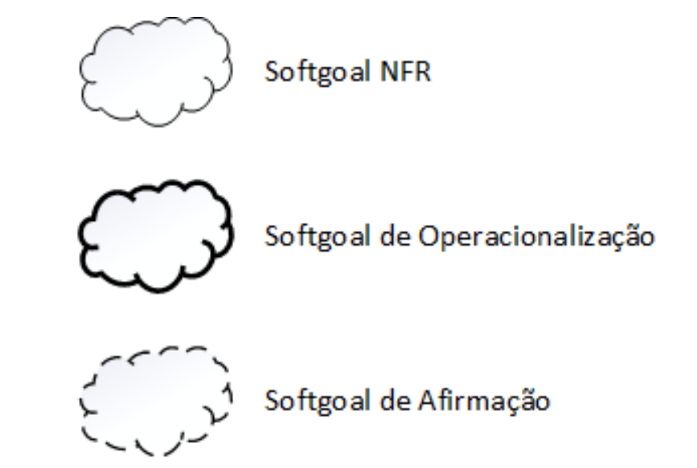
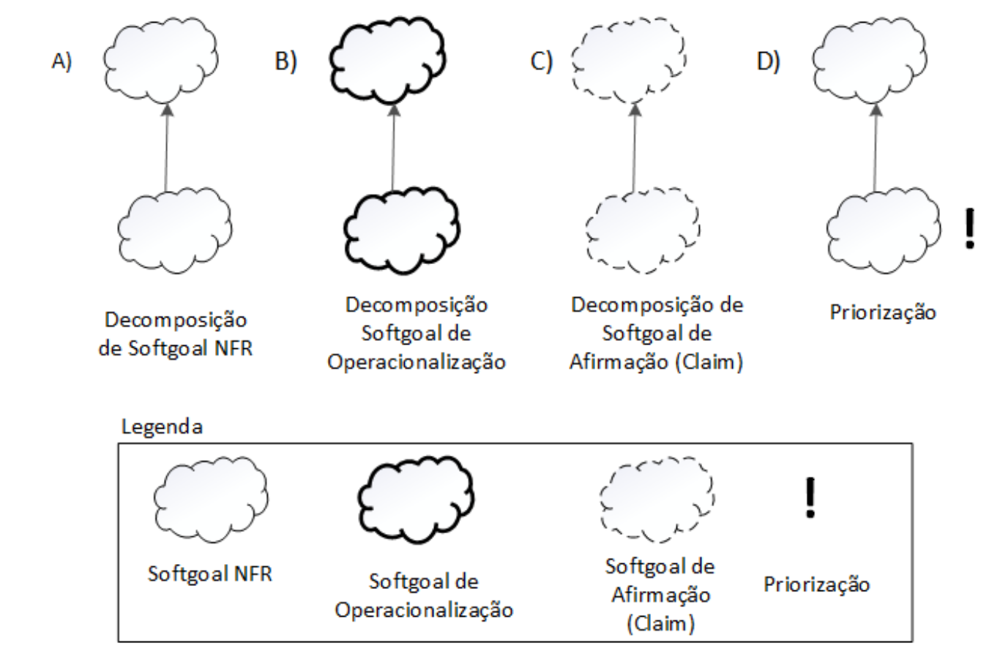
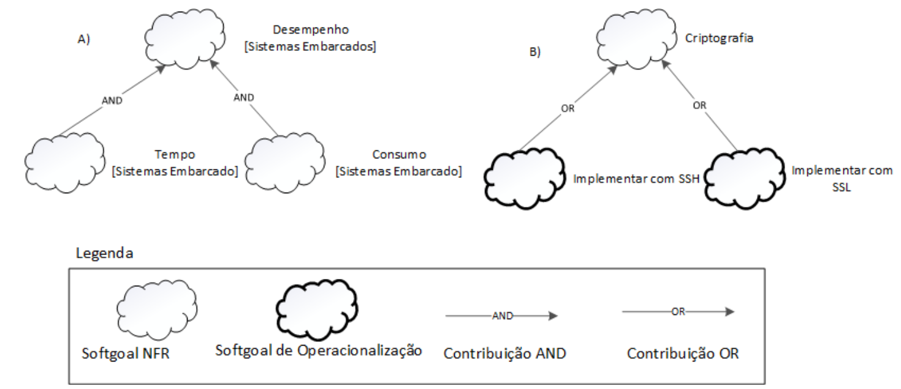
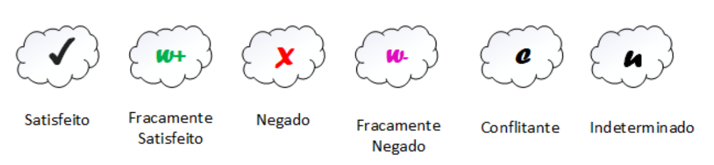

NFR¶
Descrição¶
O NFR Framework é uma abordagem proposta por Chung et al.¹ para representar e analisar requisitos não funcionais em sistemas de software. Ele é importante porque esses requisitos — como desempenho, segurança e usabilidade — influenciam diretamente na qualidade do sistema, mas muitas vezes não são claramente definidos durante o desenvolvimento. Para aplicar o framework, é necessário compreender os softgoals, que representam objetivos de qualidade, e o grafo de interdependência (SIG), usado para mostrar como os requisitos se relacionam e se afetam. Dessa forma, o NFR Framework ajuda a visualizar e equilibrar as decisões de projeto, contribuindo para sistemas mais consistentes e de melhor qualidade.
SIG - Softgoal Interdependency Graph¶
No NFR Framework, o funcionamento do modelo é representado por meio do Softgoal Interdependency Graph (SIG), um gráfico que ilustra a relação e a interdependência entre os softgoals (requisitos não funcionais). O SIG atua como um registro visual das decisões tomadas durante o processo de desenvolvimento, mostrando como cada requisito, alternativa e justificativa se conectam dentro do sistema. Esse gráfico permite uma análise incremental e iterativa das decisões, facilitando a revisão e a rastreabilidade dos impactos entre os softgoals. Além disso, o SIG possibilita a execução de procedimentos de avaliação para verificar se os requisitos de nível superior foram satisfeitos, contribuindo para uma visão clara e estruturada da lógica e das prioridades do projeto¹.
Tipos de Softgoals¶
No NFR Framework, existem três tipos principais de softgoals:
- Softgoals NFR: representam os requisitos não funcionais, organizados de forma hierárquica e inter-relacionada.
- Softgoals de Operacionalização: correspondem às soluções práticas para satisfazer os softgoals NFR, incluindo processos, dados e restrições do sistema.
- Softgoals de Afirmação: refletem características do domínio e justificam decisões de priorização e refinamento dos softgoals, fortalecendo a rastreabilidade do projeto¹.
A forma como os softgoals são representados pode ser observada na Figura 1, que ilustra graficamente sua estrutura.
Figura 1 – Representação dos Softgoals no NFR Framework.

Fonte: CHUNG et al., 2000.
Interdependências¶
As interdependências definem as relações entre os softgoals. No NFR Framework, essas relações são representadas por dois tipos principais de interdependência: os refinamentos e as contribuições. Essas interdependências permitem visualizar como os softgoals se influenciam mutuamente dentro do sistema, revelando dependências hierárquicas e impactos entre diferentes requisitos de qualidade.
Decomposições (Refinamentos)¶
Os refinamentos representam o tipo de interdependência que ocorre de forma hierárquica (top-down), quando um softgoal ascendente (pai) gera um ou mais softgoals descendentes (filhos), que se relacionam com o objetivo principal. Os refinamentos podem ocorrer por meio de decomposição, operacionalização e afirmação, permitindo detalhar gradualmente os requisitos não funcionais até níveis mais específicos e aplicáveis ao projeto (CHUNG et al., 2000).
Os quatro tipos de decomposição utilizados pelo NFR Framework são:
- Decomposição de Softgoal NFR: subdivide um softgoal NFR em outros mais específicos, ajudando a dividir grandes problemas em partes menores e mais manejáveis.
- Decomposição de Operacionalização: subdivide um softgoal de operacionalização em outros mais específicos, definindo soluções práticas e refinadas.
- Decomposição de Afirmação (Claims): refina softgoals de afirmação, úteis para apoiar ou negar justificativas de projeto.
- Priorização: tipo especial de decomposição que refina um softgoal com o mesmo tipo, mas associado a diferentes níveis de prioridade.
Essas decomposições permitem representar, dentro do grafo SIG, a estrutura de refinamento dos requisitos não funcionais, auxiliando na rastreabilidade e na clareza das decisões de projeto.
Figura 2 – Tipos de decomposição

Fonte: CHUNG et al., 2000.
Contribuições¶
Durante o refinamento dos softgoals, cada elemento descendente pode contribuir total ou parcialmente, e de forma positiva ou negativa, para a satisfação do softgoal ascendente (CHUNG et al., 2000). Essas contribuições permitem analisar o equilíbrio entre diferentes requisitos não funcionais — por exemplo, como melhorar o desempenho pode prejudicar a segurança, ou como aumentar a usabilidade pode impactar na eficiência.
Os principais tipos de contribuições do NFR Framework incluem:
- AND: todos os softgoals descendentes devem ser satisfeitos para que o ascendente também seja.
- OR: a satisfação de qualquer softgoal descendente é suficiente para satisfazer o ascendente.
Figura 3 – Exemplos de contribuições "AND" e "OR"

Fonte: Silva, Reinaldo Antônio da NFR4ES: um Catálogo de Requisitos Não-Funcionais para Sistemas Embarcados/ Reinaldo Antônio da Silva – 2019.
- MAKE (++): contribuição fortemente positiva.
- BREAK (--): contribuição fortemente negativa.
- HELP (+): contribuição parcialmente positiva.
- HURT (-): contribuição parcialmente negativa.
Figura 4 – Exemplos de contribuições ” MAKE", ”BREAK ", ”HELP" e ”HURT"
Fonte: Silva, Reinaldo Antônio da NFR4ES: um Catálogo de Requisitos Não-Funcionais para Sistemas Embarcados/ Reinaldo Antônio da Silva – 2019.
- UNKNOWN (?): contribuição desconhecida (pode ser positiva ou negativa).
- EQUALS: o softgoal descendente só será satisfeito se o ascendente também for.
- SOME (+/-): contribuição com sinal conhecido (positivo ou negativo), mas intensidade incerta.
Essas relações permitem que o analista compreenda como os softgoals se reforçam ou se contradizem dentro do sistema, servindo como base para o processo de propagação de impactos.
Figura 5 – Exemplos de contribuições"SOME", UNKNOWN e EQUALS
Fonte: Silva, Reinaldo Antônio da NFR4ES: um Catálogo de Requisitos Não-Funcionais para Sistemas Embarcados/ Reinaldo Antônio da Silva – 2019.
Propagação de Impactos (Procedimento de Avaliação)¶
O procedimento de avaliação tem como objetivo determinar o grau de satisfação dos requisitos não funcionais a partir de um conjunto de decisões do projeto. Durante esse processo, cada softgoal do SIG é rotulado de acordo com o nível de satisfação alcançado, permitindo avaliar se os objetivos de qualidade foram atingidos.
Os principais rótulos utilizados são:
- Satisfeito
- Fracamente satisfeito
- Negado
- Fracamente negado
- Conflitante
- Indeterminado
Figura 6 – Tipos de rótulos utilizados pelos softgoals

Fonte: CHUNG et al., 2000.
Esses rótulos são aplicados de forma iterativa, começando pelos softgoals de nível mais baixo na hierarquia e propagando os resultados até os softgoals de nível superior. Esse procedimento permite compreender o impacto cumulativo das decisões sobre a qualidade do sistema, facilitando ajustes e priorizações ao longo do desenvolvimento.
Cartões de Especificação¶
Os cartões de especificação servem para registrar de forma detalhada cada requisito não funcional (softgoal) que identificamos. Eles oferecem um formato padronizado, o que torna mais fácil entender, analisar e acompanhar esses requisitos ao longo do projeto.
Abaixo está o modelo padrão para os cartões de especificação:
| Item | Descrição |
|---|---|
| ID | [NFRx] - Identificador único sequencial. |
| Requisito | [RNFx] - Identificador único sequencial. |
| Classificação | [Categoria > Subcategoria] - Classificação hierárquica do RNF (ex: SUP > COMP). |
| Descrição | Declaração clara, objetiva e única do requisito. |
| Justificativa | A razão de negócio ou técnica para a existência do requisito. |
| Origem | A fonte do requisito (Técnicas de Elicitação). |
| Critério de Aceitação | Uma métrica objetiva e testável que define quando o requisito é considerado atendido. |
| Dependências | Relações com outros RNFs, indicando sinergias ou pré-requisitos. |
| Prioridade | Nível de importância do requisito em uma escala de 1 (menor) a 10 (maior). |
| Conflitos | Lista de outros requisitos que podem ser negativamente impactados por este. |
| História | Registro de data de criação e alterações relevantes no requisito. |
Fonte: Samuel, 2025
Objetivo¶
O objetivo desse trabalho é representar, analisar e documentar os Requisitos Não-Funcionais (RNFs) do site LigaMagic, utilizando o NFR Framework para garantir a qualidade do sistema. Eles são divididos como:
- 1.Classificar: Os Requisitos Não Funcionais em Requisitos de Produto, Requisitos de Processo e Requisitos Externos, conforme a classificação proposta por Kotonya e Sommerville (1998). Este trabalho tem como foco principal os Requisitos de Produto, abrangendo aspectos como Usabilidade, Performance, Portabilidade e Disponibilidade, além de identificar os Requisitos Externos quando aplicável.
- 2.Detalhar: Requisitos específicos, fornecendo uma declaração clara e justificativa e, principalmente, um critério de Aceitação (que seja objetiva e testável) para definir quando o requisito é considerado atendido.
- 3.Identificar as relações de interdependência e conflitos: Um exemplo é com a manutenibilidade e custo entre os RNFs no projeto.
Metodologia¶
A metodologia adotada para o tratamento e especificação dos Requisitos Não-Funcionais baseia-se na aplicação do NFR Framework.
Os principais procedimentos metodológicos utilizados e documentados na estrutura incluem:
1. Utilização de Softgoals: Representar os requisitos não funcionais (RNFs) como Softgoals NFR, que são objetivos de qualidade que influenciam o sistema.
2. Modelagem de Relações: Uso do Softgoal Interdependency Graph (SIG) (Gráfico de Interdependência de Softgoals) para registrar visualmente as decisões de desenvolvimento e ilustrar a relação e interdependência entre os softgoals. O SIG permite visualizar como os softgoals se influenciam mutuamente, revelando dependências hierárquicas e impactos. As relações (interdependências) são classificadas em:
- Refinamentos/Decomposições: Ocorre de forma hierárquica (top-down), detalhando softgoals mais amplos em objetivos mais específicos, como a Decomposição de Softgoal NFR ou Priorização.
- Contribuições: Descrevem como um softgoal descendente impacta a satisfação do softgoal ascendente (positiva ou negativamente). Os tipos de contribuição incluem: MAKE (++), BREAK (--), HELP (+), HURT (-) e UNKNOWN (?).
3. Especificação Detalhada (Cartões de Especificação): Uso de um formato padronizado para registrar cada requisito não funcional, facilitando a análise e o acompanhamento. Este modelo padrão (baseado no snowcard) inclui campos essenciais como ID, Requisito, Classificação, Descrição, Justificativa, Critério de Aceitação, Prioridade, Dependências e Conflitos.
4. Classificação de RNFs: De acordo com a classificação proposta por Kotonya e Sommerville (1998), os Requisitos Não Funcionais podem ser agrupados em três categorias: Requisitos de Produto, Requisitos de Processo e Requisitos Externos.
Requisitos de Produto:
- Usabilidade: Inclui requisitos como responsividade do site (RNF08), clareza na apresentação das informações (RNF09) e padronização de mensagens (RNF14).
- Performance: Inclui tempo de resposta (RNF10) e capacidade de suportar aumento de usuários simultâneos (RNF16).
- Portabilidade: Inclui compatibilidade com os principais navegadores (RNF12) e flexibilidade para alterações sem interrupção (RNF06).
- Disponibilidade: Inclui tempo de atividade do sistema (RNF11) e backup automático dos dados (RNF15).
Requisitos Externos:
- Legal e Regulatório: inclui requisitos por dependerem de fatores legais e regulatórios, como RNF01 (cumprimento de legislações aplicáveis) e RNF07 (informações fiscais corretas).
Tabela de contribuição¶
| NFR | Nome | Autor | Requisito Associado |
|---|---|---|---|
| NFR01 | Responsividade da plataforma | Samuel | RNF12 |
| NFR02 | Informações Legais e Tributárias | Marcelo | RNF07 |
| NFR03 | Padronização de mensagens | Raissa | RNF14 |
| NFR04 | Cumprir legislações aplicáveis | Guilherme | RNF01 |
| NRF05 | Organização visual | Vera | RNF09 |
| NRF06 | Exigir consentimento e concordância explícita | Angélica | RNF05 |
| NRF07 | Adaptabilidade a Dispositivos Móveis | Thiago | RNF08 |
Classificação dos RNFs¶
Requisitos de Produto¶
Usabilidade¶
- RNF08 – O site deve ser totalmente responsivo, garantindo boa visualização e funcionalidade em computador, tablet e smartphone.
- RNF09 – As informações sobre cartas, anúncios e decks devem ser organizadas de forma clara e legível.
- RNF14 – As mensagens de alerta, erro e confirmação devem aparecer de forma padronizada e visível.
- RNF04 – O sistema deve informar os usuários sobre mudanças relevantes na política com antecedência razoável (transparência contribui para melhor experiência do usuário).
Performance¶
- RNF10 – O sistema deve retornar resultados de busca em no máximo 3 segundos.
- RNF16 – O sistema deve suportar um aumento de 50% no número de usuários simultâneos sem degradação significativa de performance.
Portabilidade¶
- RNF08 – O site deve ser totalmente responsivo (também relacionado à usabilidade, mas afeta portabilidade).
- RNF12 – A plataforma deve ser compatível com as versões mais recentes dos principais navegadores (Google Chrome, Firefox, Edge e Safari).
- RNF06 – O sistema deve suportar alterações na configuração ou apresentação sem interromper o uso (flexibilidade e adaptação).
Disponibilidade¶
- RNF11 – O sistema deve estar disponível 99,5% do tempo.
- RNF15 – O sistema deve realizar backup automático dos dados a cada 24 horas (garante continuidade e recuperação).
- RNF06 – O sistema deve suportar alterações sem interrupção de uso (também relacionado à manutenibilidade).
Requisitos Externos¶
Legal e Regulatório¶
- RNF07 – Garantir que anúncios incluam informações fiscais corretas (precisão contribui para confiabilidade no desempenho).
- RNF01 – O sistema deve cumprir legislações aplicáveis, assegurando conformidade e funcionamento correto (correção é base para desempenho confiável).
- RNF05 – O sistema deve exigir que o usuário declare ciência e concordância explícita com os termos de uso e política de privacidade, conforme a Lei Geral de Proteção de Dados (LGPD – Lei nº 13.709/2018).
NFRs¶
NFR01 - Responsividade da plataforma¶
| Item | Descrição |
|---|---|
| ID | NFR01 |
| Requisito | RNF12 |
| Classificação | Suportabilidade > Compatibilidade |
| Descrição | A plataforma deve ser totalmente compatível com as versões mais recentes dos principais navegadores do mercado (Google Chrome, Mozilla Firefox, Microsoft Edge e Safari), tanto em suas versões para desktop quanto para dispositivos móveis (Android e iOS). |
| Justificativa | Garantir que a vasta e diversificada base de usuários de Magic: The Gathering possa acessar a plataforma sem barreiras técnicas, independentemente do dispositivo ou navegador de sua preferência. A compatibilidade ampla maximiza o alcance do produto, aumenta a satisfação e reduz a taxa de abandono por frustração técnica. |
| Origem | Observação |
| Critério de Aceitação | Compatibilidade do aplicativo mobile: - O aplicativo deve ser instalável e totalmente funcional nas duas últimas versões estáveis dos sistemas operacionais Android e iOS. - A interface deve seguir as diretrizes de design de cada plataforma para garantir uma experiência nativa e intuitiva. - O layout deve ser fluido e adaptar-se a diferentes tamanhos e densidades de tela de smartphones, sem perda de funcionalidade. - Todas as funcionalidades (fóruns, busca, etc.) devem operar sem erros e com performance otimizada para o ambiente mobile. Compatibilidade Desktop: - A versão web da plataforma deve operar sem erros nas últimas versões estáveis dos navegadores Google Chrome, Mozilla Firefox, Microsoft Edge e Safari. - A interface deve ser renderizada corretamente, sem quebras de layout ou sobreposição de elementos, em todos os navegadores suportados. |
| Dependências | Nenhum |
| Prioridade | 9 |
| Conflitos | - Manutenibilidade (𝒲-): A gestão de bases de código distintas (Android, iOS, Web) aumenta a complexidade da manutenção. Corrigir um bug pode exigir implementações separadas para cada plataforma, e a introdução de novas funcionalidades torna-se um processo mais lento e propenso a inconsistências. - Tempo de Lançamento no Mercado (𝒲-): A necessidade de desenvolver, testar e aprovar o aplicativo em duas lojas de aplicativos distintas (Google Play Store e Apple App Store) pode atrasar o lançamento de novas funcionalidades em comparação com uma simples atualização no lado do servidor de uma aplicação web. - Complexidade Técnica (𝒲-): Aumenta a complexidade geral do projeto, exigindo conhecimento sobre SDKs nativos, processos de compilação específicos, diretrizes de publicação de cada loja e gestão de diferentes ciclos de vida da aplicação. |
| História | Criado em 18/10/2025 |
Fonte: Samuel, 2025
NFR02 - Informações Legais e Tributárias¶
| Item | Descrição |
|---|---|
| ID | NRF02 |
| Requisito | RNF07 |
| Classificação | Performance > Confiabilidade de Dados Fiscais |
| Descrição | A plataforma deve garantir que todos os anúncios incluam informações fiscais e tributárias corretas e obrigatórias, de acordo com a legislação brasileira, assegurando a exatidão e integridade desses dados durante todo o processo de venda. |
| Justificativa | A exibição de informações fiscais corretas é essencial para garantir transparência, confiança entre usuários e conformidade com normas legais. Evita fraudes, melhora a reputação da plataforma e assegura o cumprimento de obrigações fiscais. |
| Origem | Análise de Documentos |
| Critério de Aceitação | Validação de Dados Fiscais: - O sistema deve exigir que todo anunciante informe um CNPJ ou CPF válido ao cadastrar um anúncio. - O sistema deve validar o formato e autenticidade do CNPJ/CPF informado, impedindo o cadastro de anúncios inválidos. - Cada anúncio deve apresentar o CNPJ/CPF do vendedor e o valor total com impostos inclusos. - O sistema deve permitir anexar ou gerar uma Nota Fiscal Eletrônica (NF-e) quando aplicável. - Em transações entre pessoas físicas, deve ser exibido um aviso informando que a plataforma não é responsável por obrigações fiscais entre as partes. Conformidade Legal: - O sistema deve estar de acordo com a Lei nº 12.965/2014 (Marco Civil da Internet), o Decreto nº 7.962/2013 (Comércio Eletrônico) e a Lei nº 13.709/2018 (LGPD). |
| Dependências | - RF03 – Cadastro de Usuário: necessário para associar CNPJ/CPF aos vendedores. - RF05 – Criar Anúncios: utilizado para incluir e exibir informações fiscais no processo de anúncio. - RNF04 – Segurança e Privacidade: dependência para garantir o armazenamento seguro e tratamento adequado dos dados fiscais. - Integração com API de validação fiscal (Receita Federal): necessária para verificar autenticidade dos CNPJs/CPFs informados. |
| Prioridade | 7 |
| Conflitos | - Usabilidade (𝒲-): A obrigatoriedade de preencher dados fiscais pode tornar o processo de criação de anúncios mais demorado e menos intuitivo. - Desempenho (𝒲-): A validação externa de dados fiscais pode aumentar o tempo de resposta do sistema. - Privacidade (𝒲-): A exibição pública de dados fiscais pode conflitar com as restrições da LGPD e deve ser tratada com anonimização parcial. - Disponibilidade (𝒲-): Caso a API externa de validação fiscal esteja fora do ar, o cadastro de anúncios poderá ser temporariamente interrompido. |
| História | Criado em 18/10/2025 |
Fonte: Marcelo, 2025
NFR03 - Padronização de mensagens¶
| Item | Descrição |
|---|---|
| ID | NFR03 |
| Requisito | RNF14 |
| Classificação | Usabilidade > Padronização de Mensagem |
| Descrição | O sistea deve exibir mensagens de alerta, erro, confirmação e informação de forma padronizada, consistente e visível em toda a plataforma, utilizando componentes, cores e linguagem que seja clara e fácil de entender para evitar confusões e garantir que o jogador entenda imediatamente |
| Justificativa | A padronização das mensagens melhora a experiência do jogador através de feedback visual, reduz erros de interpretação, acelera a tomada de decisão, seguindo princípios estabelecidos de design de interface e usabilidade. |
| Origem | Observação |
| Critério de Aceitação | - Usar cores no sistema, por exemplo, vermelhor para mensagens de erros críticos, Laranja para alertas ou avisos importantes, verde para mensagens de sucesso e azul para orientações. Modais de confirmação criticas, mensagens inline para validações de formulário |
| Dependências | - RF03 – Sistema de Login/Autenticação: para mensagens de sucesso/erro de login. -RF23 – Processo de Compra: para confirmações de transação e alertas de estoque. - RF05 – Validação de Dados: para mensagens de erro em formulários. - RNF08 – Responsividade: garantia de exibição correta em todos os dispositivos. - RNF09 – Organização Visual: alinhamento com padrões de layout estabelecidos |
| Prioridade | 8 |
| Conflitos | - Customização Contextual (𝒲-): Padronização rigorosa pode limitar adaptações específicas para diferentes fluxos. - Performance (𝒲-): Sistema centralizado de mensagens pode adicionar complexidade ao gerenciamento de estado. - Acessibilidade (𝒲+): Padronização facilita implementação consistente de recursos de acessibilidade. - Manutenção (𝒲+): Sistema unificado reduz duplicação e facilita atualizações. |
| História | Criado em 19/10/2025 |
Fonte: Raissa, 2025
NFR04 - Cumprir legislações aplicáveis¶
| Item | Descrição |
|---|---|
| ID | NFR04 |
| Requisito | RNF01 |
| Classificação | Legal e Regulatório > Conformidade com Legislações Vigentes |
| Descrição | O sistema deve estar em conformidade com a Lei Geral de Proteção de Dados Pessoais (LGPD – Lei nº 13.709/2018), o Código de Defesa do Consumidor e demais legislações aplicáveis a serviços digitais e comércio eletrônico. Isso inclui a coleta, armazenamento, tratamento e exclusão de dados pessoais de forma segura e transparente, além da disponibilização de informações claras sobre direitos e deveres do consumidor. |
| Justificativa | A conformidade legal é essencial para a credibilidade e continuidade operacional do site Liga Magic. O descumprimento das legislações pode resultar em multas, sanções legais e perda de confiança dos usuários. Além disso, cumprir a LGPD garante que os dados pessoais dos clientes sejam tratados com segurança, respeitando seus direitos à privacidade e ao controle sobre suas informações. |
| Origem | Ánalise de Documentos |
| Critério de Aceitação | LGPD: - A plataforma deve exibir política de privacidade e termos de uso em local de fácil acesso. - O usuário deve poder gerenciar o consentimento sobre o uso de seus dados pessoais (opt-in e opt-out). - O sistema deve permitir que o usuário solicite a exclusão ou atualização de seus dados. Código de Defesa do Consumidor: - O site deve conter informações claras sobre produtos, preços, prazos de entrega e política de devolução. - Deve ser garantido o direito de arrependimento (cancelamento em até 7 dias, conforme o art. 49). - As condições de compra e reembolso devem estar acessíveis e atualizadas. |
| Dependências | - Implementação de política de privacidade e termos de uso. - Módulo de gerenciamento de consentimento de dados. - Banco de dados seguro com criptografia e controle de acesso. - Suporte jurídico especializado para revisão de conformidade. |
| Prioridade | 10 |
| Conflitos | - Usabilidade (𝒲-): A inclusão de etapas de consentimento e formulários pode tornar a navegação mais longa ou complexa para o usuário. - Desempenho (𝒲-): Processos adicionais de criptografia e validação de dados podem impactar o tempo de resposta do sistema. - Custo (𝒲-): A implementação e manutenção de conformidade legal exigem investimento contínuo em segurança, auditorias e atualizações jurídicas. |
| História | Criado em 19/10/2025 |
Fonte: Guilherme, 2025
NRF05 - Organização visual¶
| Item | Descrição |
|---|---|
| ID | RNF09 |
| Requisito | RNF09 |
| Classificação | Usabilidade > Organização visual |
| Descrição | As informações sobre cartas, anúncios e decks devem ser organizadas de forma clara, com boa legibilidade e espaçamento adequado, facilitando a navegação. |
| Justificativa | Uma organização visual clara melhora a experiência do usuário, reduz erros de navegação e aumenta a eficiência na busca por informações, alinhando-se às boas práticas de usabilidade do site LigaMagic. |
| Origem | Análise de Documentos |
| Critério de Aceitação | - Usuário consegue localizar cartas, anúncios e decks em no máximo 3 cliques ou interações. - Todas as informações devem estar legíveis - O espaçamento entre elementos (cartas, decks, anúncios) deve permitir leitura clara e evitar sobreposição. - Alterações no layout não devem causar quebras de interface em dispositivos desktop, tablet ou mobile. |
| Dependências | RNF08 – O site deve ser totalmente responsivo, garantindo boa visualização e funcionalidade em computador, tablet e smartphone RNF12 – A plataforma deve ser compatível com as versões mais recentes dos principais navegadores (Google Chrome, Firefox, Edge e Safari). |
| Prioridade | 9 |
| Conflitos | Pode gerar conflito com requisitos de manutenção, pois deixar a interface mais visual e detalhada pode tornar o sistema um pouco mais complexo de atualizar ou testar. Além disso, pode impactar o desempenho, já que o uso de várias imagens, ícones e elementos gráficos pode deixar o carregamento das páginas mais lento. |
| História | Criado em 19/10/2025 |
Fonte: Vera, 2025
NRF06 - Exigir consentimento e concordância explícita¶
| Item | Descrição |
|---|---|
| ID | RNF05 |
| Requisito | RNF05 |
| Classificação | Legal e Regulatório > Conformidade |
| Descrição | O sistema deve garantir que o usuário declare ciência e concordância explícita com os termos de uso e política de privacidade antes de utilizar as funcionalidades do portal. |
| Justificativa | Assegurar a conformidade com a Lei Geral de Proteção de Dados (LGPD – Lei nº 13.709/2018) e demais legislações aplicáveis, garantindo que o usuário forneça consentimento informado e livre. Isso aumenta a transparência e a confiança na plataforma, além de proteger legalmente a organização. |
| Origem | Análise de Documentos |
| Critério de Aceitação | - O sistema deve exibir um termo de consentimento antes do primeiro uso de qualquer funcionalidade restrita. - O usuário só pode prosseguir após marcar explicitamente a opção “Li e concordo”. - O sistema deve armazenar a confirmação de consentimento (data, hora e IP). - Caso a política seja atualizada, o sistema deve solicitar novo consentimento ao usuário antes de continuar o uso. |
| Dependências | RNF04 |
| Prioridade | 10 |
| Conflitos | - Usabilidade (𝒲-):: Exigir consentimento pode tornar a primeira interação mais demorada, impactando ligeiramente a experiência do usuário. |
| História | Criado em 19/10/2025 |
Fonte: Angélica, 2025
NFR07 - Adaptabilidade a Dispositivos Móveis¶
| Item | Descrição |
|---|---|
| ID | NFR07 |
| Requisito | RNF08 |
| Classificação | Portabilidade > Usabilidade |
| Descrição | A interface do sistema deve se adaptar fluidamente a diferentes tamanhos de tela (viewports) e orientações (retrato e paisagem) específicas do ecossistema móvel. |
| Justificativa | Atender à fragmentação do mercado de dispositivos móveis, garantindo que a aplicação seja funcional e esteticamente agradável tanto em smartphones compactos quanto em "phablets" (telas grandes), independentemente de como o usuário segura o dispositivo. |
| Origem | Observação |
| Critério de Aceitação | 1. O layout deve ser funcional e legível em viewports móveis pequenas (ex: 320px a 375px de largura). 2. O layout deve otimizar o espaço em viewports móveis grandes (ex: 414px a 480px de largura), sem deixar espaços vazios ou elementos desproporcionais. 3. A transição entre as orientações retrato (vertical) e paisagem (horizontal) no mesmo dispositivo não deve causar quebra de layout, perda de estado ou truncamento de conteúdo essencial. 4. A densidade de pixels (DPI) deve ser considerada para garantir a nitidez de ícones e imagens em telas de alta resolução (ex: Retina/AMOLED). |
| Dependências | Nenhum |
| Prioridade | 9 |
| Conflitos | Pode conflitar na parte de manutenibilidade, por conta do aumento da complexidade da parte visual e também de testes. Além disso, também há a chance de conflito na base do desemenho, pois irá carregar múltiplos assets, podendo impactar o tempo de carregamento. |
| História | Criado em 19/10/2025 |
Fonte: Thiago, 2025
Gravações das Validações¶
| Requisito | Gravação | Autor |
|---|---|---|
| NRF05 - Organização visual | Vídeo da valicação | Vera |
| NFR02 - Informações Legais e Tributárias | Vídeo da valicação | Marcelo |
| NFR01 - Responsividade da plataforma | Vídeo da valicação | Samuel |
| NFR01 - Responsividade da plataforma | Vídeo da valicação | Thiago |
| NFR06 - Exigir consentimento e concordância explícita | Vídeo da valicação | Angélica |
| NFR04 - Cumprir legislações aplicáveis | Vídeo da valicação | Guilherme |
| NFR14 - Padronização de mensagens | Vídeo da validação | Raissa |
Bibliografia¶
SILVA, Reinaldo Antônio. NFR4ES: Um Catálogo de Requisitos Não-Funcionais para Sistemas Embarcados. Centro de Informática UFPE, Recife, 2019. Disponível em: https://repositorio.ufpe.br/handle/123456789/34150. Acesso em: 19/10/2025.
Nível de Contribuição dos Integrantes¶
| Nome | % de Contribuição |
|---|---|
| Samuel | 14,28% |
| Thiago | 14,28% |
| Angélica | 14,28% |
| Marcelo | 14,28% |
| Raissa | 14,28% |
| Vera | 14,28% |
| Guilherme | 14,28% |
Agradecimentos¶
O Grupo 02 agradece o apoio das ferramentas de Inteligência Artificial Generativa — ChatGPT e Google Gemini — na revisão e padronização de nossos artefatos. Essas tecnologias foram utilizadas para auxiliar na organização do repositório. Todo o conteúdo, incluindo a precisão técnica e as ideias apresentadas, é de responsabilidade dos autores.
Histórico de versão¶
| Versão | Data | Descrição | Autor(es) | Revisor |
|---|---|---|---|---|
| 1.1 | 15/10/2025 | Adição da tabela | Angélica | Guilherme |
| 1.2 | 17/10/2025 | Adição da introdução | Vera | Raissa |
| 1.3 | 18/10/2025 | Adição da tabela de contribuição, do modelo do cartão de especificação e do NFR01 | Samuel | Vera |
| 1.4 | 18/10/2025 | Adição da tabela de contribuição, do modelo do cartão de especificação e do NFR02 | Marcelo | Thiago |
| 1.5 | 18/10/2025 | Adição de parte da introdução | Guilherme | Vera |
| 1.6 | 19/10/2025 | Adição de parte de objetivo, metodologia e tabela 5 | Raissa | - |
| 1.7 | 19/10/2025 | Adicionar hyper links nos cartões | Samuel | Vera |
| 1.8 | 19/10/2025 | Adição da tabela NFR04 e ajustes em textos da classificação | Guilherme | Vera |
| 1.9 | 19/10/2025 | Adição do cartão de epecificação | Vera | Samuel |
| 1.10 | 19/10/2025 | Adição do cartão de epecificação | Angélica | Samuel, Guilherme, Raissa, Marcelo, Vera |
| 1.11 | 20/10/2025 | Adição do cartão de epecificação | Thiago | Samuel |